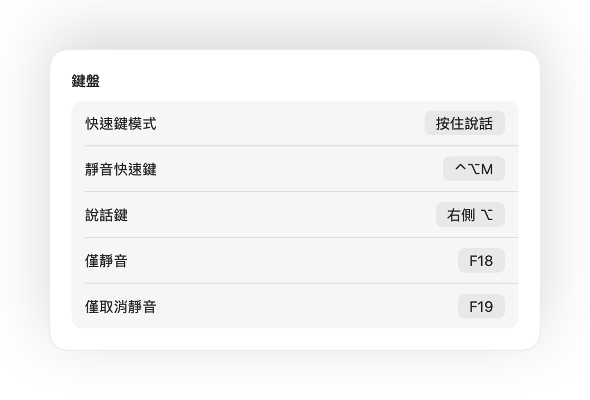

Mac 上的按住說話功能，適用所有 App
按住說話（Push to talk）能讓你在放開按鍵時保持靜音。這是在大型會議或吵雜環境中保持安靜的最佳方式，但內建這項功能的 App 少之又少，而且每一款使用的按鍵都不同。
Muffle 為 Mac 上的所有 App 帶來按住說話功能。只要在「設定」中選擇「按住說話」，按住快速鍵即可說話，放開後便會再次靜音。
如何使用按住說話
- 1
安裝 Muffle。
- 2
在 Muffle「設定」中，將「快速鍵模式」設為「按住說話」。
- 3
說話時按住 Control-Option-M。
- 4
放開按鍵，你就會再次回到靜音狀態。

- 偏好使用單一按鍵？在「設定」中配置「說話鍵」：可選用右側 Option、fn 或額外的滑鼠按鈕。
- 在 Muffle「設定」中挑選順手的快速鍵，例如任一 F 功能鍵。
常見問題
Google Meet 支援按住說話嗎？
支援。Muffle 會直接將麥克風本身靜音，因此按住說話功能適用於 Meet、Zoom、Teams、Discord 及任何其他 App。
是否有按住靜音（Push to Mute）功能？
可以。選擇「按住靜音」，按住快速鍵就能暫時靜音，就像咳嗽鍵一樣。